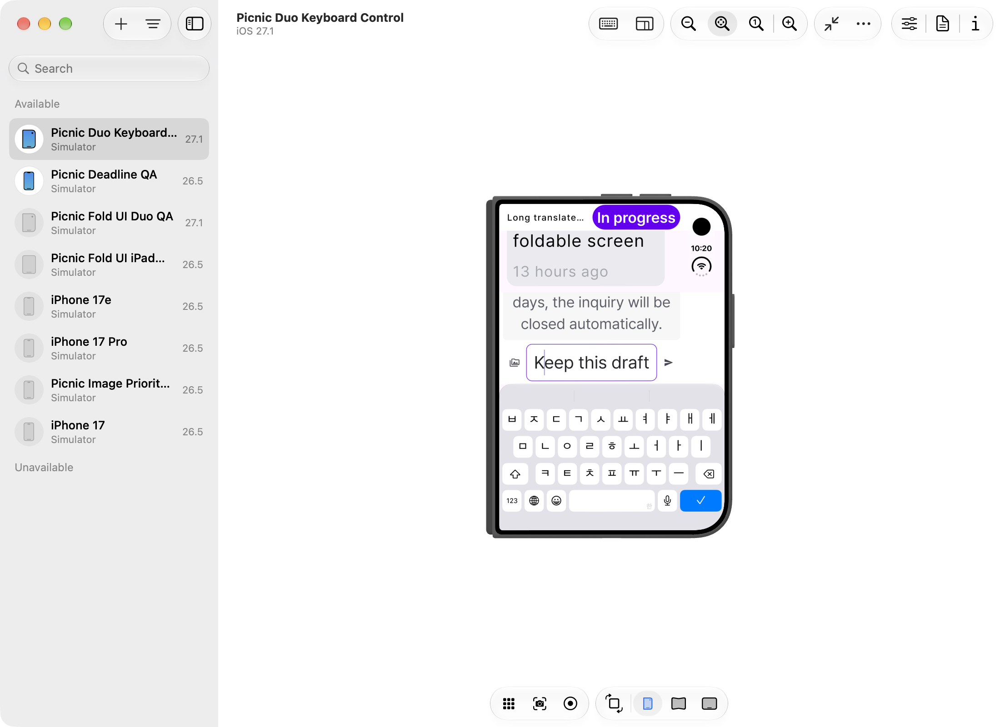
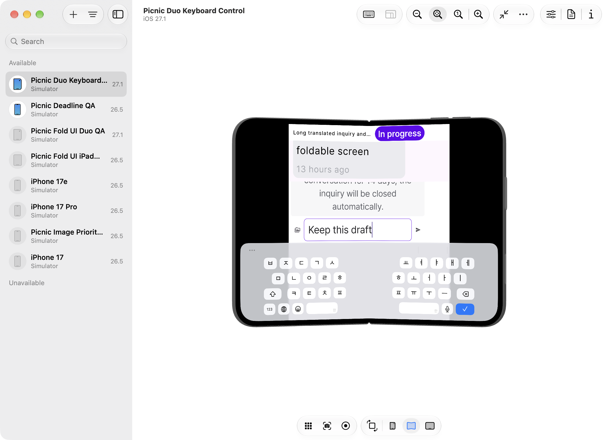
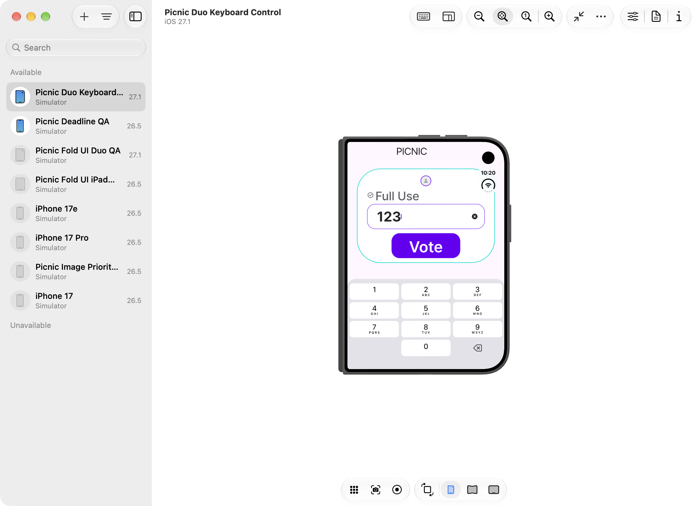
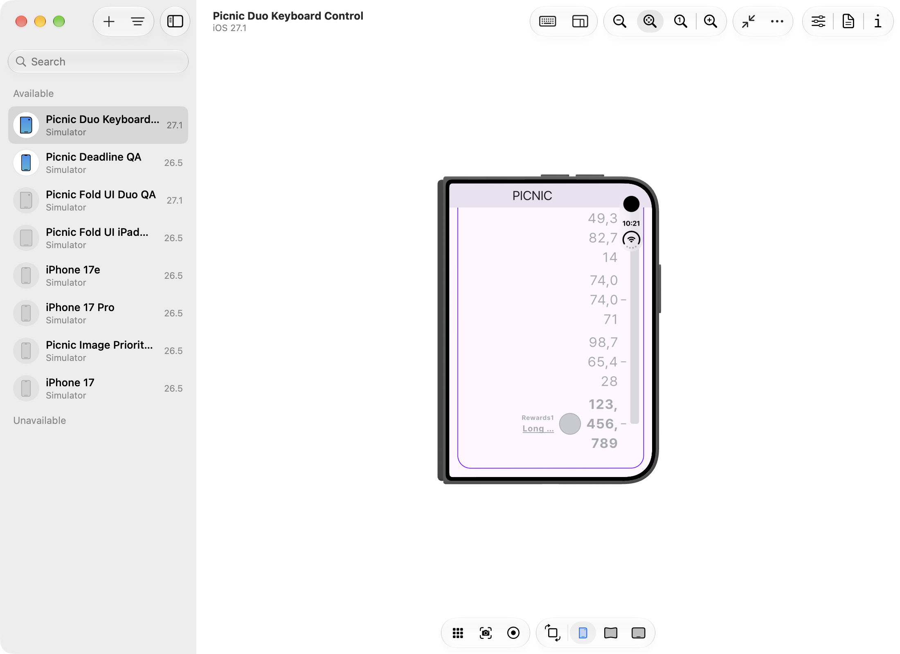
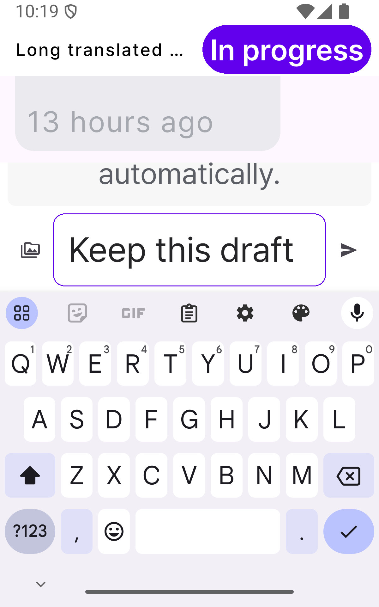
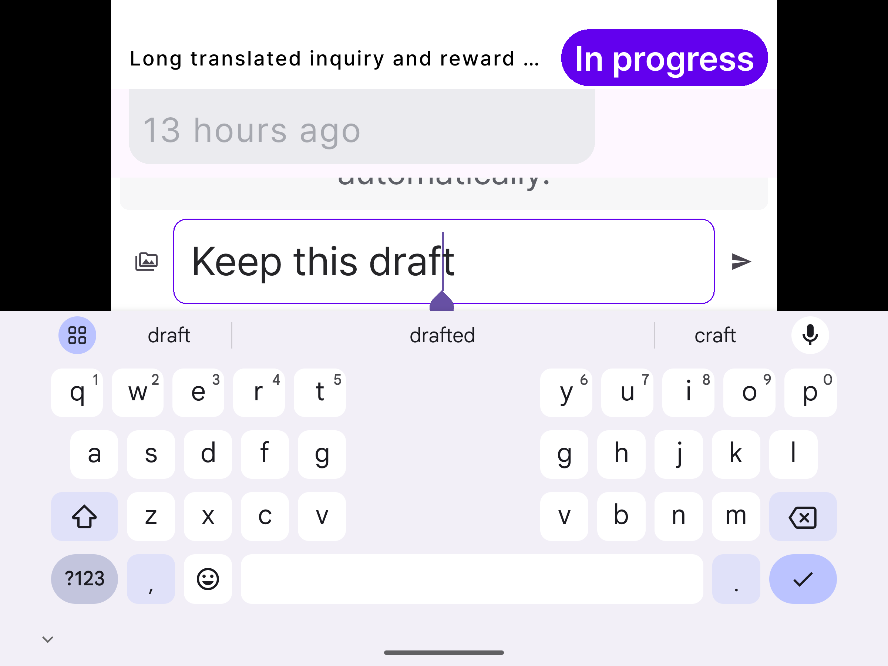
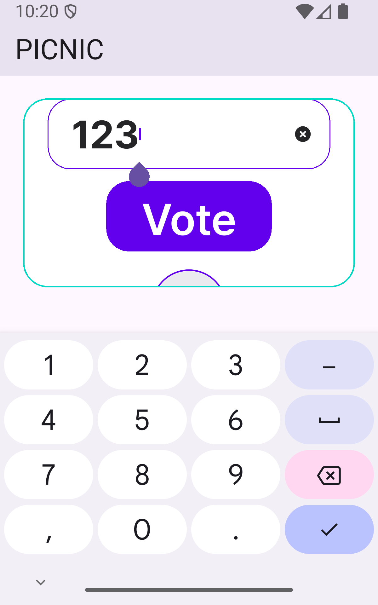
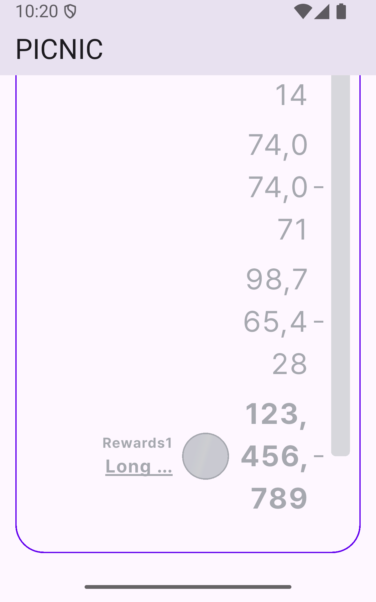

2026-10-29 · 기존 한 열 구성 · 최대 본문 폭 600 · 글자 배율 최대 2.6
내부 테스터용 Fold8 실기기 확인 절차 · 이전 점검 보고서
고객문의 상세·입력·첨부 삭제, 달성형 투표, 제휴 투표 입력을 점검했다. 커뮤니티·댓글은 제외했다. 검증에는 로컬 데이터와 서비스 대역을 사용했다. 실제 문의·투표 전송, 결제, 광고 요청은 실행하지 않았다.
| 영역 | 재현 조건 | 수정 |
|---|---|---|
| 고객문의 입력 | 좁거나 낮은 창, 글자 2.6배, 키보드 표시. 안내문과 분류명이 고정 공간을 차지해 본문·입력 영역이 최대 154px 넘쳤다. | 분류명을 대화 목록에서 스크롤한다. 입력 영역은 사용 가능한 본문 높이의 최대 60%로 제한하고, 안내·첨부·입력을 스크롤할 수 있게 했다. 입력란은 아래쪽에서 바로 접근한다. |
| 고객문의 오류·첨부 | 큰 글씨에서 오류 안내와 재시도 버튼이 최대 95px 넘쳤다. 첨부 미리보기와 입력을 함께 표시하면 최대 101px 넘쳤다. | 오류 화면과 입력 영역에 스크롤을 제공한다. 재시도·첨부 삭제·전송 버튼의 접근성을 테스트했다. 실제 전송은 하지 않았다. |
| 달성형 투표 | 긴 제목·큰 글씨에서 고정 헤더가 최대 580px 넘쳐 보상 목록에 접근하지 못했다. | 제목·후보·보상 목록을 같은 페이지에서 스크롤한다. 당겨서 새로고침과 투표 폴링을 유지한다. 숫자 애니메이션의 중첩 스크롤 알림은 페이지 폴링 제어에서 제외한다. |
| 달성 목표 숫자 | 글자 2.6배에서 123,456,789가 고정 50px 높이를 벗어나 잘렸다. | 실제 글꼴·배율로 목표 숫자 높이를 측정해 단계 높이를 늘린다. 진행 막대에도 같은 단계 높이를 적용한다. 숫자는 생략하거나 축소하지 않는다. 큰 글씨의 긴 숫자는 여러 줄로 표시한다. |
| 제휴 투표 입력 | 키보드가 표시된 상태의 창 크기 전환. | 위젯 검증 18개에서 입력값과 커서가 유지됐다. 화면 코드의 추가 수정은 없었다. |
| 검증 | 결과 |
|---|---|
| 신규 위젯 검증 | 92개 통과. 320×600·800×600·600×400, 글자 1·2.6배, 한국어·영어·스페인어. 문의 초안·종료·재시도 54개, 첨부 버튼 1개, 긴 문의의 분류명 접근 1개, 달성형·제휴 36개. |
| 관련 전체 회귀 | 신규 92개를 포함해 474개 통과, 기존 skip 1개. QnA 생명주기·전송 가드, 달성형 새로고침·폴링·탭·로딩 기하를 포함한다. skip은 기존 timer ticks for countdown 테스트다. 저장소 전체 테스트 실행은 아니다. |
| Duo iOS 27.1 Simulator | 시나리오 1개 통과. 466×678 → 951×669 문의 펼침, 반대 방향 제휴 입력 접힘. 실제 OS 키보드, 초안·커서 유지, 입력란 위치 확인. 글자 2.6배. |
| Android API 35 에뮬레이터 | 시나리오 1개 통과. 400×640 → 800×600 문의 펼침, 반대 방향 제휴 입력 접힘. 실제 OS 키보드, 초안·커서 유지, 입력란 위치 확인. 글자 2.6배. |
| 정적 분석 | 변경 화면·헬퍼·신규 테스트의 분석 통과. |
| 독립 리뷰 | Claude Opus 5.5/high의 독립 리뷰와 1회 재검토 통과. 최초 Medium 1건·Low 7건 중 7건 수정, 분류명 위치 변경 1건은 읽기·스크롤 검증 근거로 수용됐다. 차단 이슈 없음. |
첫 네이티브 실행은 제휴 입력 포맷터 처리 전에 커서를 설정해 커서 검증이 실패했다. 포맷터 처리 후 커서를 설정하고, 전환 직전 위치를 검증하도록 테스트를 고쳤다. 이후 두 플랫폼에서 통과했다.
독립 리뷰 후에는 테스트 보강과 글자 높이 측정의 중복 제거를 적용했다. 최종 위젯·회귀 검증은 이 변경을 포함한다. 네이티브 화면 증거는 측정 중복 제거 직전 실행에서 수집했다.
현재 상태: 실기기 보유 확인 · 내부 베타 배포 후 테스터가 진행한다. 문제가 발견되면 사용자가 별도 Jira 이슈를 만든다. 테스트 빌드와 테스터 결과는 아직 확인하지 않았다. 아래 항목은 수행할 절차이며, 통과 결과가 아니다. Duo는 확보 가능한 시뮬레이터 검증 범위로 관리한다.
PR #303의 UI 수정이 포함됐는지 빌드 소스 커밋과 PR의 최종 병합 커밋으로 확인한다. 버전·빌드번호만으로 포함 여부를 추정하지 않는다. 기존 기록의 510bdfb14는 rebase 전 검증 커밋이다. 기존 자동화용 테스트 앱이 아닌 일반 앱 진입점으로 빌드한 Picnic 앱을 사용한다.일반 글자 크기로 확인한 뒤 큰 글자·화면 확대 조건에서도 확인한다. OS 설정 단계와 앱의 글자 배율 2.6을 같은 값으로 간주하지 않는다. 각 항목은 통과·실패·미실행 중 하나로 기록한다. 이 절차는 UI 점검이며 실제 문의 전송·투표 확정·결제는 포함하지 않는다.
| 항목 | 테스터 행동 | 기대 결과 |
|---|---|---|
| 1. 주요 화면 | 홈·투표·충전·마이페이지를 접힌 화면과 펼친 화면에서 연다. | 기존 한 열 구성이 유지된다. 본문·버튼·하단 메뉴가 겹치거나 화면 밖으로 밀리지 않는다. |
| 2. 고객문의 입력 | 고객문의 답변 입력란에 초안을 입력한다. 커서를 문장 중간에 둔다. 키보드를 띄운 상태로 펼친다. 다시 접는다. | 앱을 이어 쓰는 설정에서 초안과 커서가 유지된다. 입력란과 전송 버튼에 접근할 수 있다. 긴 안내문은 스크롤해서 읽을 수 있다. 화면이 꺼지는 OS 동작은 앱 레이아웃 오류와 구분해 기록한다. |
| 3. 문의 첨부·종료 | 테스트 이미지 선택 화면을 연다. 이미지를 선택하거나 선택을 취소한다. 선택한 첨부를 삭제한다. 종료된 문의를 연다. | 선택·취소 후 앱 화면으로 돌아온다. 미리보기와 삭제 버튼에 접근할 수 있다. 종료 안내를 읽을 수 있고 입력은 차단된다. 파일은 전송하지 않는다. |
| 4. 문의 로딩 오류 | 테스트용 데이터에서 로딩 실패를 재현할 수 있으면 오류 화면을 연다. 초안을 입력한다. 연결 복구 후 재시도를 누른다. | 오류 안내와 재시도 버튼에 접근할 수 있다. 재시도 후 초안이 유지된다. 재현하지 못하면 통과 대신 미실행으로 기록한다. |
| 5. 달성형 투표 | 제목이 긴 달성형 투표를 연다. 목표 숫자와 보상 목록까지 스크롤한다. 접기·펼치기 후 화면을 확인한다. | 제목 때문에 목록에 접근하지 못하는 현상이 없다. 목표 숫자의 모든 자릿수를 읽을 수 있다. 큰 글씨에서 줄바꿈은 허용하지만 잘림·겹침은 없어야 한다. 진행 막대와 단계 표시가 어긋나지 않는다. |
| 6. 제휴 투표 입력 | 제휴 투표 입력창을 연다. 수량을 입력한 뒤 커서를 중간에 둔다. 키보드가 열린 상태로 접고 펼친다. 확정하지 않고 닫는다. | 입력 수량과 커서가 유지된다. 키보드가 입력란·닫기 동작을 가리지 않는다. |
| 7. 회전·분할 화면 | 고객문의와 투표 화면에서 지원되는 가로 화면 또는 분할 화면으로 전환한다. 원래 크기로 복귀한다. | 짧은 화면에서도 필요한 내용과 버튼에 스크롤로 접근할 수 있다. 복귀 후 화면이 비거나 겹치지 않는다. 지원하지 않는 모드는 미실행으로 기록한다. |
| 8. 앱 복귀 | 초안 입력 중 홈 화면으로 이동한다. 기기를 접거나 펼친다. 최근 앱에서 Picnic으로 복귀한다. | 앱 프로세스가 유지된 상태에서 화면과 초안이 유지된다. 새로 시작한 경우에는 종료·재실행 여부를 따로 기록한다. |
빌드·기기 정보를 함께 적는다. 실패한 항목은 접힘/펼침 상태, 키보드·글자 크기, 재현 순서, 기대 결과와 실제 결과를 기록한다. 가능하면 문제 전후 화면 녹화 또는 스크린샷을 첨부한다. 테스트용 데이터를 사용하고 계정 정보가 화면에 노출되지 않게 한다.
앱 버전 / 빌드번호 / 수정 커밋 포함 여부: 기기 모델 / Android / One UI: 키보드 / 글자 크기 / 화면 확대 / 커버 화면 앱 연속 사용 설정: 항목별 결과(1~8, 통과·실패·미실행): 실패 재현 순서 / 기대 결과 / 실제 결과: 화면 자료: 미실행 항목과 이유:
내부 테스터의 결과를 받은 뒤 실기기 검증 상태를 갱신한다. 현재 시뮬레이터·에뮬레이터 결과를 실기기 통과로 대체하지 않는다.
2026-10-29 · 최신 main(446d8d048)을 충돌 없이 반영했다. 기존 구현과 비교한 실행 코드 차이는 main의 기존 앱 빌드번호뿐이다. 배포 태그·신규 빌드는 생성하지 않았다. 다음 내부 베타 후 Fold8 실기기 QA를 진행한다.
| 대상 | 결과 |
|---|---|
| Picnic 앱 전체 테스트 | 70개 통과. |
| TTJA 전체 테스트 | 1개 통과. |
| 공통 라이브러리 전체 테스트 | 17,207개 통과 · 13개 실패 · 6개 건너뜀. 전체 실행 종료 코드는 1이다. 실패 13건은 기존 기준 실행과 같은 항목이다. 12개 golden 테스트의 이미지 비교 13개는 차이 비율·픽셀 수가 모두 기준 실행과 같다. 나머지 1건은 기존 번역 checksum 검사다. 새 실패 항목은 없다. 전체 통과로 표시하지 않는다. |
| 변경 Dart 파일 정적 분석 | 60개 파일, 문제 없음(공통 49·Picnic 10·TTJA 1). |
각 패키지에서 flutter test --no-pub --reporter expanded를 실행했다. 공통 라이브러리에는 --concurrency 4를 적용했다. 네이티브 검증은 앞선 결과를 유지하며 이번 병합 단계에서 재실행하지 않았다.
picnic-fold-merge-lib-tests.log 565622ba3cfd8dad590740009a32854efa5a24bffecc8a37e877e323ad8337c1 picnic-fold-merge-app-tests.log bb4b9b07e49372b955330e49e02a3ee7ea49288555fdd003ab003d8da537b531 picnic-fold-merge-ttja-tests.log a27f0a71d59945b98bf9e78871391803f3afb379c8214aeafde0ba54e39d0cae








cd picnic_lib flutter test test/presentation/layout/detail_ui_foldable_test.dart test/presentation/layout/vote_variants_foldable_test.dart test/presentation/pages/my_page/qna test/presentation/pages/vote/vote_detail_achieve_page*_test.dart cd ../picnic_app flutter test integration_test/device/detail_ui_device_test.dart -d <owned-device-id> --dart-define=VERIFY_FOLD_TRANSITION=true
네이티브 검증은 로그의 RESIZE 신호에 맞춰 실제 시뮬레이터/에뮬레이터 창을 접거나 펼쳐야 한다. 테스트는 크기 전환, OS 키보드, 입력값, 커서, 입력란 위치를 확인한다. 본문 HTML에는 이미지를 내장하지 않는다.